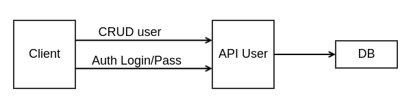

PHP MicroService
on AWS ECS
deployed with ContinuousPHP
What is a Service ?
- Docker Compose Service
- AWS ECS Service
- PHP Service
Traditional PHP Architecture

PHP Micro Service Oriented Architecture
Traditional AWS Web Infrastructure
Infrastructure As a Code
- Keep Control
- Automated build Container
- Automated build Production Infrastructure (Cloudformation)
- Continuous Deployment of container
Development Workflow
docker-compose up --build
version: "3"
services:
auth:
build:
context: ./services/auth
dockerfile: docker/dev.Dockerfile
ports:
- "8081:8081"
volumes:
- ./services/auth:/var/www/html
instore:
build:
context: ./services/instore
dockerfile: docker/dev.Dockerfile
ports:
- "8082:8082"
volumes:
- ./services/instore:/var/www/html
warehouse:
build:
context: ./services/warehouse
dockerfile: docker/dev.Dockerfile
ports:
- "8083:8083"
volumes:
- ./services/warehouse:/var/www/html
Dockerfile Dev
FROM php:7.1-apache
RUN ln -sf /usr/share/zoneinfo/Europe/Paris /etc/localtime
# Install last update and php extension
RUN apt-get update && apt-get install -y \
git \
vim \
bzip2 \
zip \
libbz2-dev \
libmcrypt-dev \
libicu-dev \
&& docker-php-ext-configure mysqli \
&& docker-php-ext-install mysqli pdo_mysql bz2 mcrypt intl
# Enable Apache Rewrite module
RUN a2enmod rewrite
COPY docker/vhost.conf /etc/apache2/sites-available/000-default.conf
CMD ["apache2-foreground"]
Dockerfile Prod
# Insert the application into the container
RUN rm -rf /var/www/html && mkdir -p /var/www/html/vendor /var/www/html/public /var/www/html/api /var/www/html/config
COPY continuousphp.package composer.json /var/www/html/
COPY api /var/www/html/api
COPY config /var/www/html/config
COPY public /var/www/html/public
COPY vendor /var/www/html/vendor
RUN rm -rf /var/www/html/docker
CMD ["apache2-foreground"]
ECS
- Task defintion
- Service
- Task
- ECS Agent in EC2
- Cluster
- Attachment to ALB
Healthcheck
- PHP endpoint dedicated to healthcheck
- ALB healthcheck draining
- Be careful of Headers restriction
(Server Http Accept: */*)
Thank you very much!
https://github.com/Pierozi/aws-ecs-php-micro-services/tree/ecs/auth